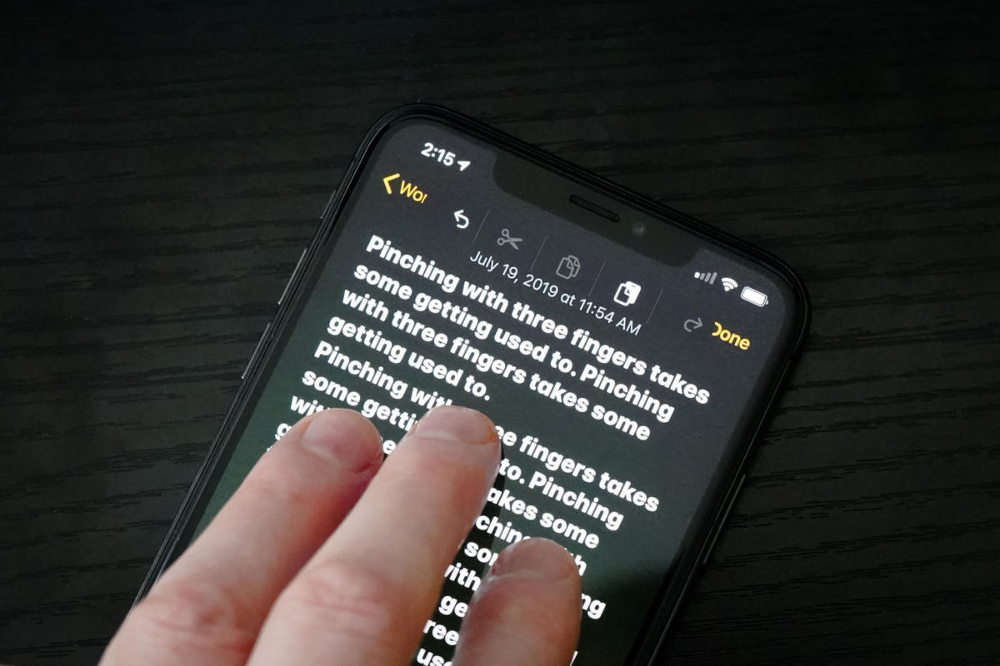

7 Hidden Ways To Improve Yours Apple iPhone
The way to focus on what you could to do to add features and breathe new life into your current iPhone is to install iOS 13. Apple’s free mobile operating system is compatible with models dating as far back as 2015’s iPhone 6s and 6s Plus. It can take as much as 1 hour for your phone to retrieve the software and install the update, so you need to put aside some time for this. There are also some features that allow your phone to be more useful and productive.
1. Optimized Battery Charging
Once you turn on the optimized battery charge feature, which is now a feature of the iOS 13. Your iPhone at this point should begin learning from your battery charging routine as time passes, this way it can wait to complete the charging process above the 80 percent level until you are ready to use it. No one wants a battery that dies as soon as you turn on your phone, so with this feature on, it is suppose to slow down the battery aging cycle.
2. Three-Finger Shortcuts
Simply using three of your fingers and swiping your screen from right to left will undo the last thing that occurred. Doing the reverse of swiping from left to right with three fingers will redo or put back what was just taken away. The undo feature is also available by double-tapping with three fingers on the screen. This works much better that shaking your phone to activate these features. Also, if you pinch up this will copy what is on the screen, pinching up twice will cut what is on the screen, while the pinch down action will paste, all using three fingers.
3. Blocking Unwanted Mail Senders
You can have all the mail sent by a particular sender blocked and routed to trash. Select the address and choose “Block this Contact.” This feature works across all your Apple devices.
4. Individual Website Controls
Using this feature in the Safari browser, users can individually change options for specific websites. On one website you can allow the site to access your camera, location and microphone, while on another site you can refuse access to all these features. In addition you can specify whether a website will be allowed to display main page or mobile-optimized version of the webpages, however this only works if the site is optimized to provide more than one view.
5. Safari File Downloads
Apple’s Safari web browser in iOS 13 now includes a helpful download manager. Just tap on a link in the browser and (by default) the file will be downloaded onto iCloud Drive. Changes to your downloads folder will sync across all your iCloud devices.
6. Screen Time ‘On More Minute’
Apple’s Screen Time tools provide valuable insight into how much and where you are spending time on the phone. Screen Time in the iOS 13, has the ability to request one more minute to wrap up what you’re doing and save your work before the app limit you’ve established kicks in.
7. Voice Control
You can use your voice to swipe, pinch, zoom, or perform other gestures. Or you might talk aloud to open apps by name, adjust the volume of the phone, tap buttons, take a screenshot, dictate or edit text and more. Get started by tapping on Settings, then Accessibility, then Voice Control. You can also simply ask Siri to turn off and on voice control settings as well.